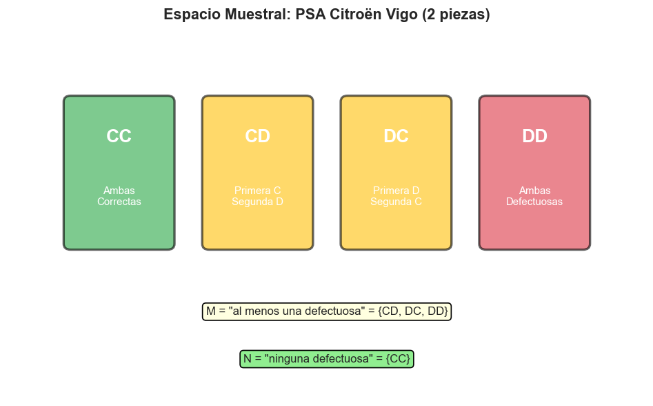
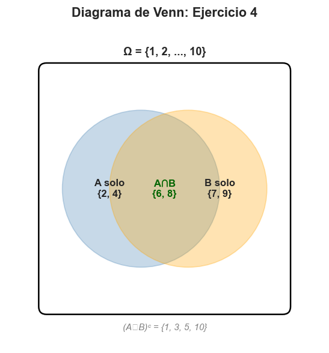
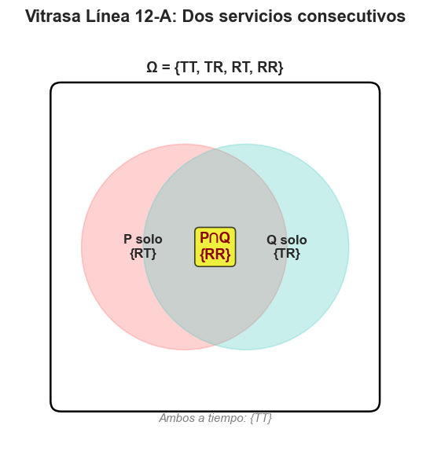

CE6: Interpretar y gestionar la incertidumbre | CE1: Razonar matemáticamente
Un experimento determinista produce siempre el mismo resultado bajo las mismas condiciones (ej: sumar 2+3).
Un experimento aleatorio puede dar distintos resultados aunque se repita en condiciones idénticas (ej: lanzar un dado, extraer una carta).
El espacio muestral \(\Omega\) es el conjunto de todos los posibles resultados de un experimento aleatorio.
Ejemplos:
Un suceso es cualquier subconjunto del espacio muestral \(\Omega\).
Dados dos sucesos \(A\) y \(B\):
Sucesos incompatibles o mutuamente excluyentes: \(A \cap B = \emptyset\) (no pueden ocurrir a la vez)
Experimento: lanzar un dado de 6 caras.
a) Escribe el espacio muestral \(\Omega\)
b) Define los siguientes sucesos:
c) Calcula \(A \cup B\), \(A \cap B\) y \(A^c\)
Se extrae una carta de la baraja española (40 cartas: oros, copas, espadas, bastos; valores 1 al 7, sota, caballo, rey).
Define los sucesos \(D\) = "figura" (sota/caballo/rey) y \(E\) = "oros". Calcula \(D \cap E\).
En el Puerto de Vigo llegan en un día 3 barcos pesqueros \([A, B, C]\). El espacio muestral son los barcos con incidencia técnica.
a) Construye \(\Omega\)
b) Define 3 sucesos distintos
Dados los sucesos \(A = \{1, 2, 3, 4\}\) y \(B = \{3, 4, 5, 6\}\) dentro del espacio \(\Omega = \{1, 2, 3, 4, 5, 6, 7, 8\}\), calcula:
a) \(A \cup B\) b) \(A \cap B\) c) \(A^c\) d) \(B^c\) e) \((A \cup B)^c\)
En la cadena de montaje de PSA Citroën Vigo se extraen 2 piezas consecutivas. Cada pieza puede ser defectuosa (D) o correcta (C).
a) Escribe el espacio muestral \(\Omega\)
b) Define el suceso \(M\) = "al menos una defectuosa"
c) Define el suceso \(N\) = "ninguna defectuosa"

Determina si los siguientes pares de sucesos son mutuamente excluyentes (incompatibles) en el lanzamiento de un dado:
a) \(A\) = "par", \(B\) = "múltiplo de 3"
b) \(C\) = "menor que 3", \(D\) = "mayor que 4"
Dibuja un diagrama de Venn para representar los sucesos \(A\), \(B\) y \(A \cap B\) cuando \(\Omega = \{1, 2, 3, 4, 5, 6, 7, 8, 9, 10\}\), \(A = \{2, 4, 6, 8\}\) y \(B = \{6, 7, 8, 9\}\).
Identifica las regiones: \(A\) solo, \(B\) solo, \(A \cap B\), y fuera de ambos.

Nota: El diagrama puede dibujarse a mano o generarse con Python (ver archivo generador_graficos_S1.py)Vitrasa registra los retrasos de sus líneas. Se toman al azar 2 servicios consecutivos de la línea 12-A. Cada servicio puede llegar a tiempo (T) o con retraso (R).
a) Define el espacio muestral \(\Omega\)
b) Construye un diagrama de Venn que represente los sucesos:
c) ¿Son \(P\) y \(Q\) mutuamente excluyentes? Justifica.
